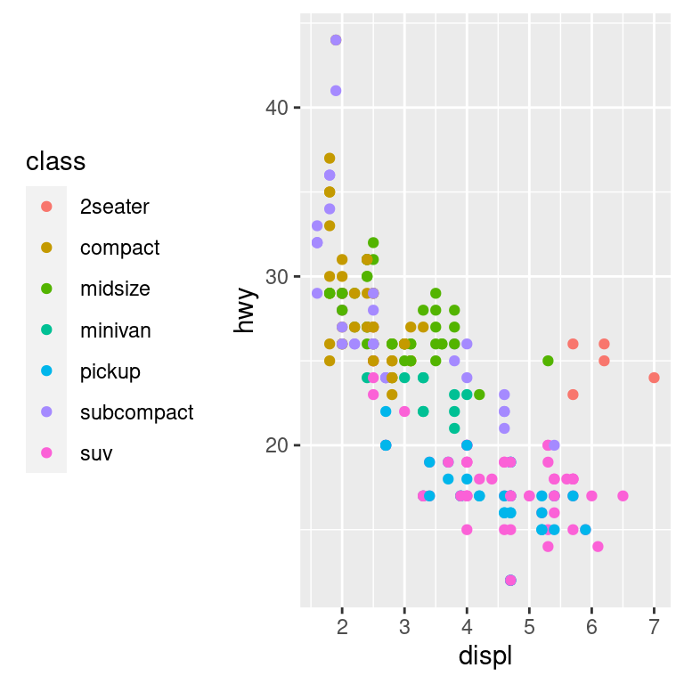
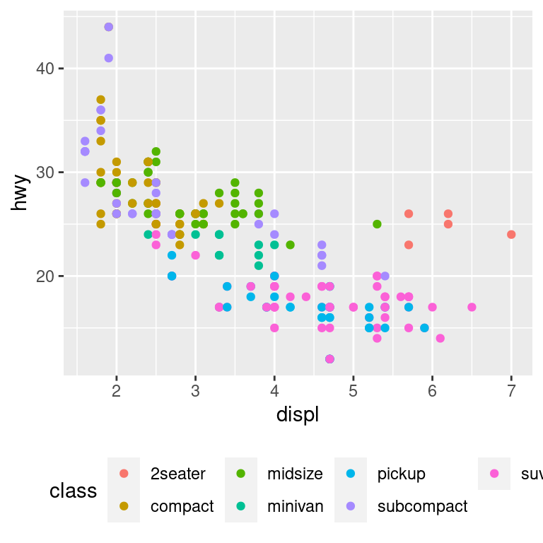
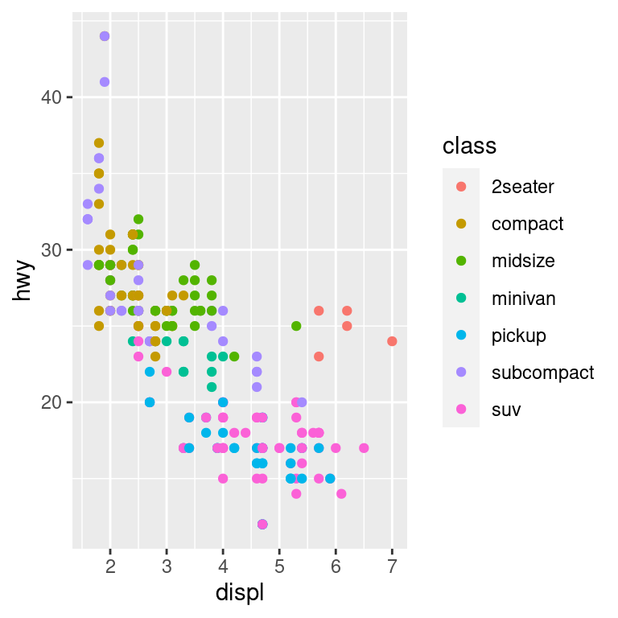
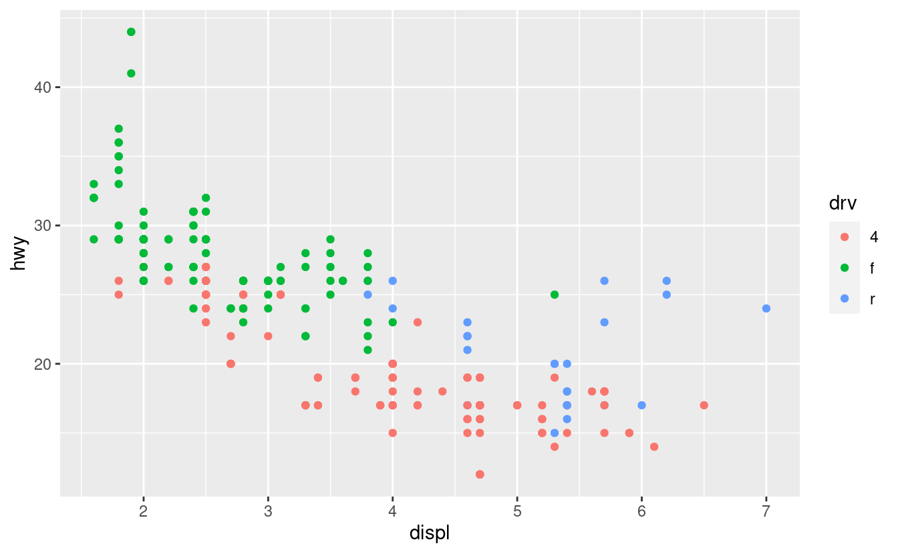
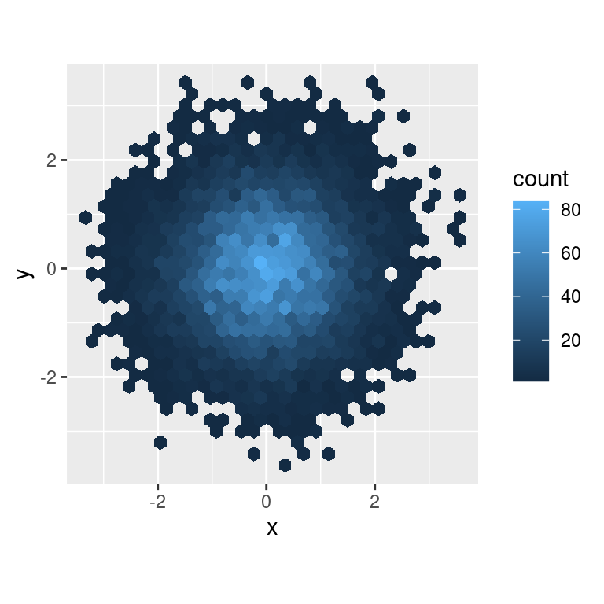
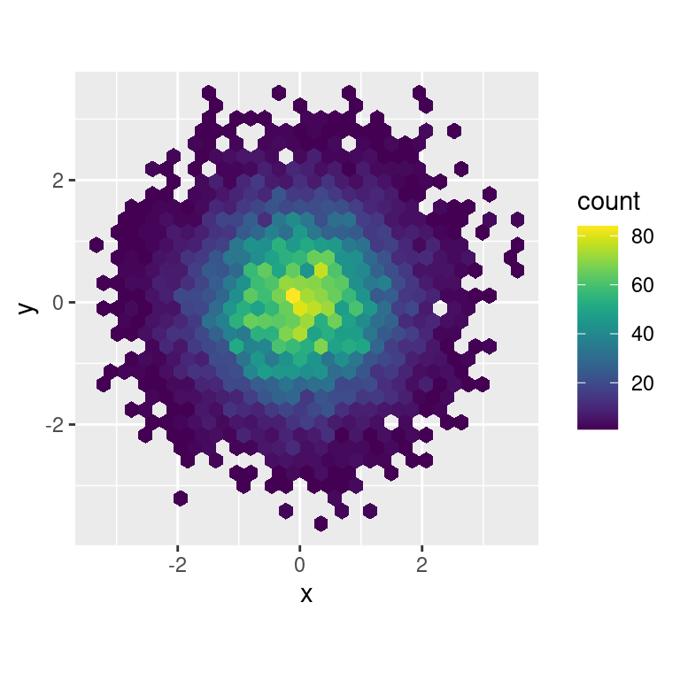
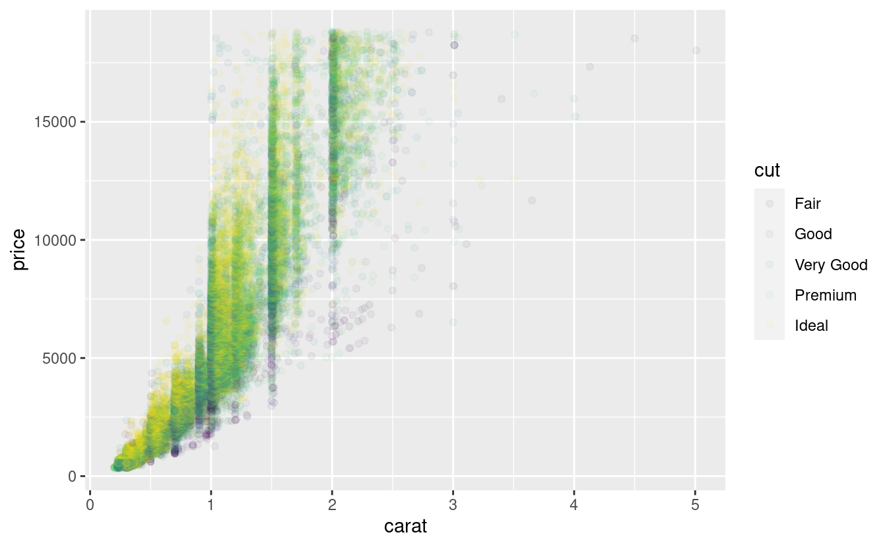
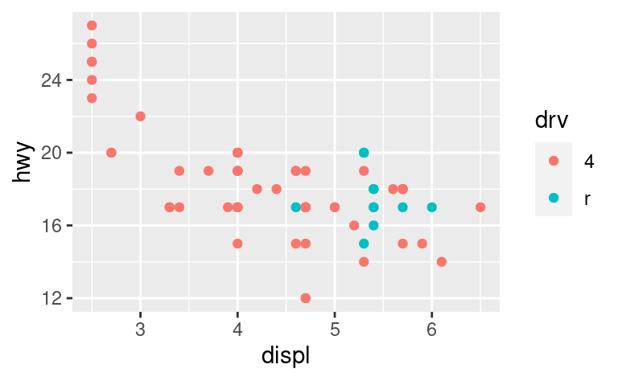
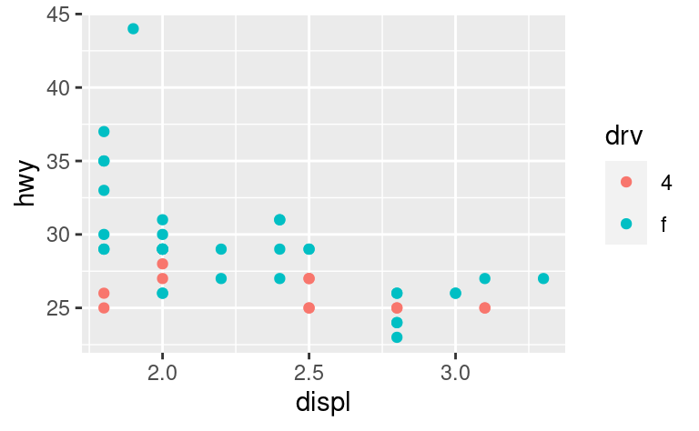
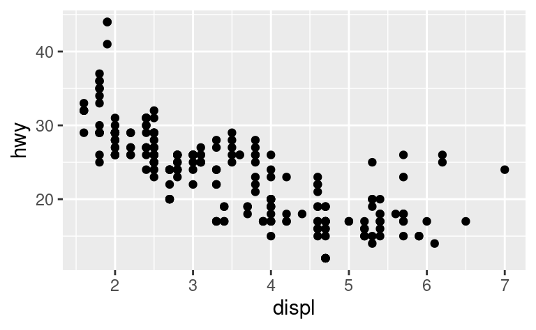

28 Grafici per la comunicazione
28.1 Introduzione
In analisi esplorativa, avete imparato ad usare i grafici come strumenti di esplorazione. Quando fate dei grafici esplorativi, sapete - ancor prima di guardare - quali variabili il grafico visualizzerà. Avete fatto ogni grafico per uno scopo, potete guardarlo velocemente e poi passare al grafico successivo. Nel corso della maggior parte delle analisi, produrrete decine o centinaia di grafici, la maggior parte dei quali viene immediatamente gettata via.
Ora che avete capito i vostri dati, dovete comunicare la vostra comprensione agli altri. Il vostro pubblico probabilmente non condividerà le vostre conoscenze di base e non sarà profondamente investito dai dati. Per aiutare gli altri a costruire rapidamente un buon modello mentale dei dati, dovrete investire notevoli sforzi per rendere i vostri grafici il più possibile autoesplicativi. In questo capitolo, imparerete alcuni degli strumenti che ggplot2 fornisce per farlo.
Questo capitolo si concentra sugli strumenti necessari per creare buoni grafici. Presumo che sappiate cosa volete e che abbiate solo bisogno di sapere come farlo. Per questo motivo, consiglio vivamente di abbinare questo capitolo ad un buon libro di visualizzazione generale. Mi piace particolarmente The Truthful Art, di Albert Cairo. Non insegna la meccanica della creazione di visualizzazioni, ma si concentra invece su ciò che è necessario pensare per creare una grafica efficace.
28.1.1 Prerequisiti
In questo capitolo, ci concentreremo ancora una volta su ggplot2. Useremo anche un po’ di dplyr per la manipolazione dei dati, e alcuni pacchetti di estensione di ggplot2, inclusi ggrepel e viridis. Piuttosto che caricare queste estensioni qui, faremo riferimento alle loro funzioni esplicitamente, usando la notazione ::. Questo aiuterà a rendere chiaro quali funzioni sono integrate in ggplot2 e quali provengono da altri pacchetti. Non dimenticare che dovrai installare quei pacchetti con install.packages() se non li hai già.
28.2 Etichetta
Il punto di partenza più semplice per trasformare un grafico esplorativo in un grafico espositivo è con delle buone etichette. Si aggiungono etichette con la funzione labs(). Questo esempio aggiunge un titolo al grafico:
ggplot(mpg, aes(displ, hwy)) +
geom_point(aes(color = class)) +
geom_smooth(se = FALSE) +
labs(title = "Fuel efficiency generally decreases with engine size")Lo scopo del titolo di un grafico è quello di riassumere il risultato principale. Evitare titoli che descrivono solo ciò che il grafico è, ad esempio “Un grafico a dispersione della cilindrata del motore rispetto al risparmio di carburante”.
Se hai bisogno di aggiungere altro testo, ci sono altre due utili etichette che puoi usare in ggplot2 2.2.0 e superiori (che dovrebbero essere disponibili nel momento in cui leggerai questo libro):
subtitleaggiunge ulteriori dettagli in un carattere più piccolo sotto il titolo.captionaggiunge del testo in basso a destra del grafico, spesso usato per descrivere la fonte dei dati.
ggplot(mpg, aes(displ, hwy)) +
geom_point(aes(color = class)) +
geom_smooth(se = FALSE) +
labs(
title = "Fuel efficiency generally decreases with engine size",
subtitle = "Two seaters (sports cars) are an exception because of their light weight",
caption = "Data from fueleconomy.gov"
)Potete anche usare labs() per sostituire i titoli degli assi e delle legende. Di solito è una buona idea sostituire i nomi brevi delle variabili con descrizioni più dettagliate e includere le unità.
ggplot(mpg, aes(displ, hwy)) +
geom_point(aes(colour = class)) +
geom_smooth(se = FALSE) +
labs(
x = "Engine displacement (L)",
y = "Highway fuel economy (mpg)",
colour = "Car type"
)È possibile usare equazioni matematiche invece di stringhe di testo. Basta sostituire "" con quote() e leggere le opzioni disponibili in ?plotmath:
df <- tibble(
x = runif(10),
y = runif(10)
)
ggplot(df, aes(x, y)) +
geom_point() +
labs(
x = quote(sum(x[i] ^ 2, i == 1, n)),
y = quote(alpha + beta + frac(delta, theta))
)28.2.1 Esercizi
Creare un grafico sui dati relativi al risparmio di carburante con un
titlepersonalizzato,title,subtitle,caption,x,y, ecolorepersonalizzati.Il risultato di
geom_smooth()è in qualche modo fuorviante perché il valore dihwyper i per i motori di grandi dimensioni è sbilanciato verso l’alto a causa dell’inclusione di auto sportive leggere con auto sportive leggere con grandi motori. Utilizzare gli strumenti di modellazione per adattare e visualizzare un modello migliore.Prendete un grafico esplorativo che avete creato nell’ultimo mese e aggiungete titoli informativi per facilitare la comprensione. titoli informativi per renderlo più comprensibile agli altri.
28.3 Annotazioni
Oltre a etichettare i principali componenti del grafico, è spesso utile etichettare singole osservazioni o gruppi di osservazioni. Il primo strumento a disposizione è geom_text(). geom_text() è simile a geom_point(), ma ha un’estetica aggiuntiva: label. Consente di aggiungere etichette testuali alle trame.
Ci sono due possibili fonti di etichette. In primo luogo, si può avere un tibble che fornisce le etichette. Il grafico qui sotto non è molto utile, ma illustra un approccio utile: estrarre l’auto più efficiente di ogni classe con dplyr e poi etichettarla sul grafico:
best_in_class <- mpg %>%
group_by(class) %>%
filter(row_number(desc(hwy)) == 1)
ggplot(mpg, aes(displ, hwy)) +
geom_point(aes(colour = class)) +
geom_text(aes(label = model), data = best_in_class)Questo è difficile da leggere perché le etichette si sovrappongono tra loro e con i punti. Possiamo migliorare un po’ le cose passando a geom_label() che disegna un rettangolo dietro il testo. Usiamo anche il parametro nudge_y per spostare le etichette leggermente sopra i punti corrispondenti:
ggplot(mpg, aes(displ, hwy)) +
geom_point(aes(colour = class)) +
geom_label(aes(label = model), data = best_in_class, nudge_y = 2, alpha = 0.5)Questo aiuta un po’, ma se guardate attentamente nell’angolo in alto a sinistra, noterete che ci sono due etichette praticamente una sopra l’altra. Questo accade perché il chilometraggio autostradale e la cilindrata per le migliori auto delle categorie compatte e subcompatte sono esattamente gli stessi. Non c’è modo di sistemarle applicando la stessa trasformazione per ogni etichetta. Invece, possiamo usare il pacchetto ggrepel di Kamil Slowikowski. Questo utile pacchetto regolerà automaticamente le etichette in modo che non si sovrappongano:
ggplot(mpg, aes(displ, hwy)) +
geom_point(aes(colour = class)) +
geom_point(size = 3, shape = 1, data = best_in_class) +
ggrepel::geom_label_repel(aes(label = model), data = best_in_class)Notate un’altra tecnica utile usata qui: Ho aggiunto un secondo strato di punti grandi e vuoti per evidenziare i punti che ho etichettato.
A volte si può usare la stessa idea per sostituire la legenda con etichette poste direttamente sul grafico. Non è meraviglioso per questa trama, ma non è troppo male (theme(legend.position = "none") disattiva la leggenda — ne parleremo più avanti).
class_avg <- mpg %>%
group_by(class) %>%
summarise(
displ = median(displ),
hwy = median(hwy)
)
ggplot(mpg, aes(displ, hwy, colour = class)) +
ggrepel::geom_label_repel(aes(label = class),
data = class_avg,
size = 6,
label.size = 0,
segment.color = NA
) +
geom_point() +
theme(legend.position = "none")In alternativa, potreste voler solo aggiungere una singola etichetta al grafico, ma avrete comunque bisogno di creare un data frame. Spesso si vuole l’etichetta nell’angolo del grafico, quindi è conveniente creare un nuovo data frame usando summarise() per calcolare i valori massimi di x e y.
label <- mpg %>%
summarise(
displ = max(displ),
hwy = max(hwy),
label = "Increasing engine size is \nrelated to decreasing fuel economy."
)
ggplot(mpg, aes(displ, hwy)) +
geom_point() +
geom_text(aes(label = label), data = label, vjust = "top", hjust = "right")Se vuoi posizionare il testo esattamente sui bordi del grafico, puoi usare +Inf e -Inf. Dato che non stiamo più calcolando le posizioni da mpg, possiamo usare tibble() per creare il data frame:
label <- tibble(
displ = Inf,
hwy = Inf,
label = "L'aumento delle dimensioni del motore è \ncorrelato alla diminuzione del risparmio di carburante."
)
ggplot(mpg, aes(displ, hwy)) +
geom_point() +
geom_text(aes(label = label), data = label, vjust = "top", hjust = "right")In questi esempi, ho suddiviso manualmente l’etichetta in righe usando "\n". Un altro approccio è quello di usare stringr::str_wrap() per aggiungere automaticamente le interruzioni di riga, dato il numero di caratteri desiderato per riga:
"L'aumento delle dimensioni del motore è legato alla diminuzione del risparmio di carburante." %>%
stringr::str_wrap(width = 40) %>%
writeLines()
#> L'aumento delle dimensioni del motore è
#> legato alla diminuzione del risparmio di
#> carburante.Si noti l’uso di hjust e vjust per controllare l’allineamento dell’etichetta. La figura 28.1 mostra tutte le nove combinazioni possibili.
Figure 28.1: All nine combinations of hjust and vjust.
Ricorda, oltre a geom_text(), hai molti altri geom in ggplot2 disponibili per aiutare ad annotare la tua trama. Alcune idee:
Usa
geom_hline()egeom_vline()per aggiungere linee di riferimento. Spesso le rendo spesse (size = 2) e bianche (colour = white), e le disegno sotto il livello primario dei dati. Questo le rende facili da vedere, senza distogliere l’attenzione dai dati.Usa
geom_rect()per disegnare un rettangolo intorno ai punti di interesse. I confini del rettangolo sono definiti dalle estetichexmin,xmax,ymin,ymax.Usa
geom_segment()con l’argomentoarrowper attirare l’attenzione su un punto con una freccia. Usa gli estrattixeyper definire la posizione iniziale, exendeyendper definire la posizione finale.
L’unico limite è la tua immaginazione (e la tua pazienza nel posizionare le annotazioni in modo che siano esteticamente piacevoli)!
28.3.1 Esercizi
Usate
geom_text()con posizioni infinite per posizionare il testo ai quattro angoli della trama.Leggete la documentazione di
annotate(). Come potete usarlo per aggiungere un testo un’etichetta di testo ad un grafico senza dover creare una tibla?Come interagiscono le etichette con
geom_text()con il faceting? Come potete aggiungere un’etichetta ad una singola sfaccettatura? Come si può mettere un’etichetta diversa in ogni sfaccettatura? (Suggerimento: pensate ai dati sottostanti).Quali argomenti di
geom_label()controllano l’aspetto dello sfondo box?Quali sono i quattro argomenti di
arrow()? Come funzionano? Create una serie di grafici che dimostrino le opzioni più importanti.
28.4 Scale
Il terzo modo in cui puoi rendere il tuo grafico migliore per la comunicazione è regolare le scale. Le scale controllano la mappatura dai valori dei dati a cose che si possono percepire. Normalmente, ggplot2 aggiunge automaticamente le scale per voi. Per esempio, quando digitate:
ggplot(mpg, aes(displ, hwy)) +
geom_point(aes(colour = class))ggplot2 aggiunge automaticamente delle scale predefinite dietro le quinte:
ggplot(mpg, aes(displ, hwy)) +
geom_point(aes(colour = class)) +
scale_x_continuous() +
scale_y_continuous() +
scale_colour_discrete()Si noti lo schema di denominazione delle scale: scala_ seguita dal nome dell’estetica, poi _, quindi il nome della scala. Le scale predefinite sono denominate in base al tipo di variabile a cui si allineano: continua, discreta, datetime o data. Esistono molte scale non predefinite, che verranno descritte di seguito.
Le scale predefinite sono state scelte con cura per svolgere un buon lavoro per un’ampia gamma di input. Ciononostante, si potrebbe voler sovrascrivere i valori predefiniti per due motivi:
Si possono modificare alcuni parametri della scala predefinita. In questo modo è possibile modificare, ad esempio, le interruzioni degli assi o le etichette dei tasti della legenda. etichette dei tasti sulla legenda.
Si potrebbe voler sostituire completamente la scala e utilizzare un algoritmo completamente diverso. algoritmo diverso. Spesso si può fare meglio di quello predefinito perché si conoscono meglio i dati. perché si conoscono meglio i dati.
28.4.1 Divisione degli assi e chiavi della legenda
Ci sono due argomenti principali che influenzano l’aspetto dei tick sugli assi e delle chiavi sulla legenda: breaks e labels. Le interruzioni controllano la posizione delle zecche o i valori associati alle chiavi. Etichette controlla l’etichetta di testo associata a ciascun segno di spunta/tasto. L’uso più comune di breaks è quello di sovrascrivere la scelta predefinita:
ggplot(mpg, aes(displ, hwy)) +
geom_point() +
scale_y_continuous(breaks = seq(15, 40, by = 5))Si può usare labels allo stesso modo (un vettore di caratteri della stessa lunghezza di breaks), ma si può anche impostare NULL per sopprimere del tutto le etichette. Questo è utile per le mappe o per la pubblicazione di grafici in cui non è possibile condividere i numeri assoluti.
ggplot(mpg, aes(displ, hwy)) +
geom_point() +
scale_x_continuous(labels = NULL) +
scale_y_continuous(labels = NULL)È inoltre possibile utilizzare breaks e labels per controllare l’aspetto delle legende. Collettivamente gli assi e le legende sono chiamati guide. Gli assi sono usati per l’estetica di x e y; le legende sono usate per tutto il resto.
Un altro uso delle `brecce’ è quando si hanno relativamente pochi punti di dati e si vuole evidenziare esattamente il punto in cui si verificano le osservazioni. Ad esempio, prendiamo questo grafico che mostra quando ogni presidente degli Stati Uniti ha iniziato e terminato il proprio mandato.
presidential %>%
mutate(id = 33 + row_number()) %>%
ggplot(aes(start, id)) +
geom_point() +
geom_segment(aes(xend = end, yend = id)) +
scale_x_date(NULL, breaks = presidential$start, date_labels = "'%y")Si noti che la specifica delle interruzioni e delle etichette per le scale date e datetime è leggermente diversa:
date_labelsaccetta una specifica di formato, nella stessa forma diparse_datetime().date_breaks(non mostrato qui), accetta una stringa come “2 giorni” o “1 mese”.
28.4.2 Disposizione della legenda
Il più delle volte si useranno breaks e labels per modificare gli assi. Sebbene entrambi funzionino anche per le legende, ci sono alcune altre tecniche che è più probabile utilizzare.
Per controllare la posizione complessiva della legenda, è necessario utilizzare l’impostazione tema(). Torneremo sui temi alla fine del capitolo, ma in breve essi controllano le parti non legate ai dati della trama. L’impostazione del tema legend.position controlla la posizione della legenda:
base <- ggplot(mpg, aes(displ, hwy)) +
geom_point(aes(colour = class))
base + theme(legend.position = "left")
base + theme(legend.position = "top")
base + theme(legend.position = "bottom")
base + theme(legend.position = "right") # il default
Puoi anche usare legend.position = "none" per sopprimere del tutto la visualizzazione della legenda.
Per controllare la visualizzazione delle singole legende, usa guide() insieme a guide_legend() o guide_colourbar(). L’esempio seguente mostra due importanti impostazioni: controllare il numero di righe che la legenda utilizza con nrow, e sovrascrivere una delle estetiche per rendere i punti più grandi. Questo è particolarmente utile se hai usato una bassa alpha per visualizzare molti punti su un grafico.
ggplot(mpg, aes(displ, hwy)) +
geom_point(aes(colour = class)) +
geom_smooth(se = FALSE) +
theme(legend.position = "bottom") +
guides(colour = guide_legend(nrow = 1, override.aes = list(size = 4)))
#> `geom_smooth()` using method = 'loess' and formula 'y ~ x'28.4.3 Sostituzione di una scala
Invece di modificare un po’ i dettagli, è possibile sostituire completamente la scala. Ci sono due tipi di scale che probabilmente vorrete sostituire: le scale di posizione continua e le scale di colore. Fortunatamente, gli stessi principi si applicano a tutte le altre estetiche, per cui una volta acquisita la padronanza della posizione e del colore, sarete in grado di sostituire rapidamente le altre scale.
È molto utile tracciare le trasformazioni della variabile. Ad esempio, come abbiamo visto in prezzi dei diamanti, è più facile vedere la relazione precisa tra carat e price se li trasformiamo in log:
ggplot(diamonds, aes(carat, price)) +
geom_bin2d()
ggplot(diamonds, aes(log10(carat), log10(price))) +
geom_bin2d()Tuttavia, lo svantaggio di questa trasformazione è che gli assi sono ora etichettati con i valori trasformati, rendendo difficile l’interpretazione del grafico. Invece di fare la trasformazione nella mappatura estetica, possiamo invece farla con la scala. Questo è visivamente identico, eccetto che gli assi sono etichettati con la scala originale dei dati.
ggplot(diamonds, aes(carat, price)) +
geom_bin2d() +
scale_x_log10() +
scale_y_log10()Un’altra scala che viene spesso personalizzata è quella dei colori. La scala categorica predefinita sceglie i colori che sono uniformemente distanziati dalla ruota dei colori. Un’alternativa utile è rappresentata dalle scale ColorBrewer, che sono state messe a punto a mano per funzionare meglio per le persone con i più comuni tipi di daltonismo. I due grafici qui sotto sembrano simili, ma c’è una differenza sufficiente nelle tonalità del rosso e del verde, tanto che i punti sulla destra possono essere distinti anche dalle persone affette da daltonismo rosso-verde.
ggplot(mpg, aes(displ, hwy)) +
geom_point(aes(color = drv))
ggplot(mpg, aes(displ, hwy)) +
geom_point(aes(color = drv)) +
scale_colour_brewer(palette = "Set1")
Non dimenticare le tecniche più semplici. Se ci sono solo pochi colori, potete aggiungere una mappatura ridondante delle forme. Questo aiuterà anche a garantire che la tua trama sia interpretabile in bianco e nero.
ggplot(mpg, aes(displ, hwy)) +
geom_point(aes(color = drv, shape = drv)) +
scale_colour_brewer(palette = "Set1")Le scale di ColorBrewer sono documentate online all’indirizzo http://colorbrewer2.org/ e rese disponibili in R tramite il pacchetto RColorBrewer, di Erich Neuwirth. La figura 28.2 mostra l’elenco completo di tutte le tavolozze. Le palette sequenziale (in alto) e divergente (in basso) sono particolarmente utili se i valori categoriali sono ordinati o hanno una “via di mezzo”. Ciò si verifica spesso se si è usato cut() per trasformare una variabile continua in una categorica.
Figure 28.2: All ColourBrewer scales.
Quando si dispone di una mappatura predefinita tra valori e colori, si può usare scala_colore_manuale(). Ad esempio, se si mappa il partito presidenziale con il colore, si vuole utilizzare la mappatura standard di rosso per i repubblicani e blu per i democratici:
presidential %>%
mutate(id = 33 + row_number()) %>%
ggplot(aes(start, id, colour = party)) +
geom_point() +
geom_segment(aes(xend = end, yend = id)) +
scale_colour_manual(values = c(Republican = "red", Democratic = "blue"))Per il colore continuo, potete usare il built-in scale_colour_gradient() o scale_fill_gradient(). Se avete una scala divergente, potete usare scale_colour_gradient2(). Questo ti permette di dare, per esempio, valori positivi e negativi di colori diversi. Questo a volte è anche utile se vuoi distinguere i punti sopra o sotto la media.
Un’altra opzione è scale_colour_viridis() fornita dal pacchetto viridis. È un analogo continuo delle scale categoriche di ColorBrewer. I progettisti, Nathaniel Smith e Stéfan van der Walt, hanno attentamente personalizzato uno schema di colori continuo che ha buone proprietà percettive. Ecco un esempio dalla vignetta di viridis.
df <- tibble(
x = rnorm(10000),
y = rnorm(10000)
)
ggplot(df, aes(x, y)) +
geom_hex() +
coord_fixed()
ggplot(df, aes(x, y)) +
geom_hex() +
viridis::scale_fill_viridis() +
coord_fixed()
Si noti che tutte le scale di colore sono disponibili in due varietà: scale_colour_x() e scale_fill_x() per l’estetica colour e fill rispettivamente (le scale di colore sono disponibili in entrambe le grafie UK e US).
28.4.4 Esercizi
-
Perché il seguente codice non sovrascrive la scala di default?
ggplot(df, aes(x, y)) + geom_hex() + scale_colour_gradient(low = "white", high = "red") + coord_fixed() Qual è il primo argomento di ogni scala? Come si confronta con
labs()?-
Cambiate la visualizzazione dei termini presidenziali con:
- Combinando le due varianti mostrate sopra.
- Migliorando la visualizzazione dell’asse y.
- Etichettare ogni termine con il nome del presidente.
- Aggiungere etichette informative al grafico.
- Mettere delle pause ogni 4 anni (questo è più complicato di quanto sembri!).
-
Usare
override.aesper rendere la legenda del seguente grafico più facile da vedere.ggplot(diamonds, aes(carat, price)) + geom_point(aes(colour = cut), alpha = 1/20)
28.5 Zoom
Ci sono tre modi per controllare i limiti della trama:
- Regolare quali dati vengono tracciati
- Impostare i limiti in ogni scala
- Impostando
xlimeylimincoord_cartesian()
Per ingrandire una regione del grafico, è generalmente meglio usare coord_cartesian(). Confronta i seguenti due grafici:
ggplot(mpg, mapping = aes(displ, hwy)) +
geom_point(aes(color = class)) +
geom_smooth() +
coord_cartesian(xlim = c(5, 7), ylim = c(10, 30))
mpg %>%
filter(displ >= 5, displ <= 7, hwy >= 10, hwy <= 30) %>%
ggplot(aes(displ, hwy)) +
geom_point(aes(color = class)) +
geom_smooth()Puoi anche impostare i limits sulle singole scale. Ridurre i limiti è fondamentalmente equivalente al sottoinsieme dei dati. È generalmente più utile se volete espandere i limiti, per esempio, per far corrispondere le scale in diversi plot. Per esempio, se estraiamo due classi di automobili e le tracciamo separatamente, è difficile confrontare i grafici perché tutte e tre le scale (l’asse x, l’asse y e il colore estetico) hanno range diversi.
suv <- mpg %>% filter(class == "suv")
compact <- mpg %>% filter(class == "compact")
ggplot(suv, aes(displ, hwy, colour = drv)) +
geom_point()
ggplot(compact, aes(displ, hwy, colour = drv)) +
geom_point()
Un modo per superare questo problema è quello di condividere le scale tra più trame, formando le scale con i “limiti” dei dati completi.
x_scale <- scale_x_continuous(limits = range(mpg$displ))
y_scale <- scale_y_continuous(limits = range(mpg$hwy))
col_scale <- scale_colour_discrete(limits = unique(mpg$drv))
ggplot(suv, aes(displ, hwy, colour = drv)) +
geom_point() +
x_scale +
y_scale +
col_scale
ggplot(compact, aes(displ, hwy, colour = drv)) +
geom_point() +
x_scale +
y_scale +
col_scaleIn questo caso particolare, si sarebbe potuto usare semplicemente il faceting, ma questa tecnica è utile più in generale, se ad esempio si vogliono distribuire le trame su più pagine di un report.
28.6 Temi
Infine, è possibile personalizzare gli elementi non dati del grafico con un tema:
ggplot(mpg, aes(displ, hwy)) +
geom_point(aes(color = class)) +
geom_smooth(se = FALSE) +
theme_bw()ggplot2 include otto temi predefiniti, come mostrato in Figura 28.3. Molti altri sono inclusi in pacchetti aggiuntivi come ggthemes (https://github.com/jrnold/ggthemes), di Jeffrey Arnold.

Figure 28.3: The eight themes built-in to ggplot2.
Molte persone si chiedono perché il tema di default ha uno sfondo grigio. Questa è stata una scelta deliberata perché mette in evidenza i dati mentre rende ancora visibili le linee della griglia. Le linee bianche della griglia sono visibili (il che è importante perché aiutano significativamente i giudizi sulla posizione), ma hanno poco impatto visivo e possiamo facilmente ignorarle. Lo sfondo grigio dà alla trama un colore tipografico simile al testo, assicurando che la grafica si adatti al flusso di un documento senza saltare fuori con uno sfondo bianco brillante. Infine, lo sfondo grigio crea un campo di colore continuo che assicura che la trama sia percepita come una singola entità visiva.
È anche possibile controllare i singoli componenti di ogni tema, come la dimensione e il colore del carattere utilizzato per l’asse y. Sfortunatamente, questo livello di dettaglio è al di fuori dello scopo di questo libro, quindi avrete bisogno di leggere il libro ggplot2 per i dettagli completi. È anche possibile creare i propri temi, se si sta cercando di abbinare un particolare stile aziendale o di giornale.
28.7 Salvare le tue trame
Ci sono due modi principali per portare i vostri grafici fuori da R e nel vostro testo finale: ggsave() e knitr. ggsave() salverà la trama più recente sul disco:
ggplot(mpg, aes(displ, hwy)) + geom_point()
ggsave("my-plot.pdf")
#> Saving 7 x 4.33 in imageSe non si specificano la width e lheight, queste saranno prese dalle dimensioni del dispositivo di plottaggio corrente. Per un codice riproducibile, è meglio specificarle.
In generale, tuttavia, penso che dovreste assemblare i vostri report finali usando R Markdown, quindi voglio concentrarmi sulle opzioni importanti per il codice che dovreste conoscere per i grafici. Potete saperne di più su ggsave() nella documentazione.
28.7.1 Dimensionamento delle figure
La sfida più grande della grafica in R Markdown è quella di dare alle figure la giusta dimensione e forma. Ci sono cinque opzioni principali che controllano il dimensionamento delle figure: fig.width, fig.height, fig.asp, out.width e out.height. Il dimensionamento delle immagini è impegnativo perché ci sono due dimensioni (la dimensione della figura creata da R e la dimensione in cui viene inserita nel documento di output) e più modi di specificare le dimensioni (cioè, altezza, larghezza e rapporto di aspetto: sceglietene due su tre).
Io uso solo tre delle cinque opzioni:
Trovo esteticamente più gradevole che le trame abbiano una larghezza coerente. larghezza. Per imporlo, ho impostato
fig.width = 6(6") efig.asp = 0,618(il rapporto aureo) nelle impostazioni predefinite. Poi, nei singoli pezzi, aggiusto solo regolarefig.asp.Controllo la dimensione dell’output con
out.widthe la imposto ad una percentuale della larghezza della linea. Il mio default èout.width = "70%"efig.align = "center". Questo dà alle trame spazio per respirare, senza occupare troppo spazio.Per mettere più trame in una singola riga ho impostato la
out.widtha50%per due trame,33%per 3 trame, o25%per 4 trame, e impostarefig.align = "default". A seconda di ciò che sto cercando di illustrare (ad es. mostrare i dati o mostrare le variazioni dei grafici), modificherò anchefig.width, come discusso sotto.
Se trovi che devi strizzare gli occhi per leggere il testo nel tuo grafico, devi modificare fig.width. Se fig.width è più grande della dimensione in cui la figura è resa nel documento finale, il testo sarà troppo piccolo; se fig.width è più piccolo, il testo sarà troppo grande. Avrai spesso bisogno di fare un po’ di esperimenti per capire il giusto rapporto tra la fig.width e la larghezza finale nel tuo documento. Per illustrare il principio, i seguenti tre grafici hanno fig.width rispettivamente di 4, 6 e 8:

Per assicurarsi che la dimensione dei caratteri sia coerente in tutte le figure, ogni volta che si imposta out.width, è necessario regolare anche fig.width per mantenere lo stesso rapporto con la out.width predefinita. Per esempio, se la larghezza predefinita di fig.width è 6 e quella di out.width è 0,7, quando si imposta out.width = "50%" si dovrà impostare fig.width a 4,3 (6 * 0,5 / 0,7).
28.7.2 Altre opzioni importanti
Quando si mescolano codice e testo, come faccio io in questo libro, raccomando di impostare fig.show = "hold" in modo che i grafici vengano mostrati dopo il codice. Questo ha il piacevole effetto collaterale di costringere a suddividere grandi blocchi di codice con le relative spiegazioni.
Per aggiungere una didascalia al grafico, usare fig.cap. In R Markdown questo cambia la figura da inline a “floating”.
Se si produce un output PDF, il tipo di grafica predefinito è PDF. Si tratta di una buona impostazione predefinita, perché i PDF sono grafici vettoriali di alta qualità. Tuttavia, possono produrre grafici molto grandi e lenti se si visualizzano migliaia di punti. In questo caso, impostare dev = "png" per forzare l’uso dei PNG. La loro qualità è leggermente inferiore, ma sono molto più compatti.
È una buona idea dare un nome ai pezzi di codice che producono figure, anche se non si etichettano abitualmente altri pezzi. L’etichetta del chunk viene usata per generare il nome del file del grafico su disco, quindi dare un nome ai chunk rende molto più facile individuare le trame e riutilizzarle in altre circostanze (ad esempio, se si vuole inserire rapidamente una singola trama in un’e-mail o in un tweet).
28.8 Per saperne di più
Il posto migliore per saperne di più è il libro ggplot2: ggplot2: Elegant graphics for data analysis. Approfondisce la teoria sottostante e contiene molti altri esempi di come combinare i singoli elementi per risolvere problemi pratici. Purtroppo il libro non è disponibile gratuitamente online, anche se è possibile trovare il codice sorgente all’indirizzo https://github.com/hadley/ggplot2-book.
Un’altra grande risorsa è la galleria delle estensioni di ggplot2 https://exts.ggplot2.tidyverse.org/gallery/. Questo sito elenca molti dei pacchetti che estendono ggplot2 con nuovi geomi e scale. È un ottimo punto di partenza se si sta cercando di fare qualcosa che sembra difficile con ggplot2.